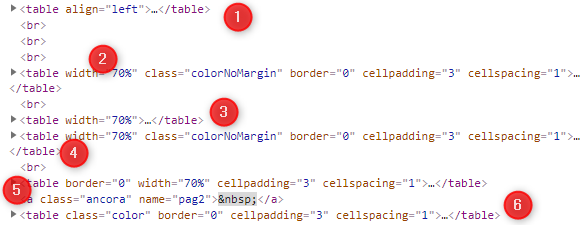
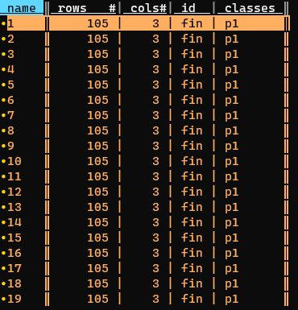
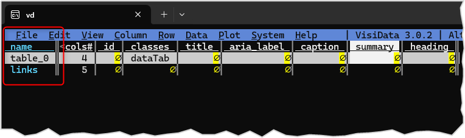
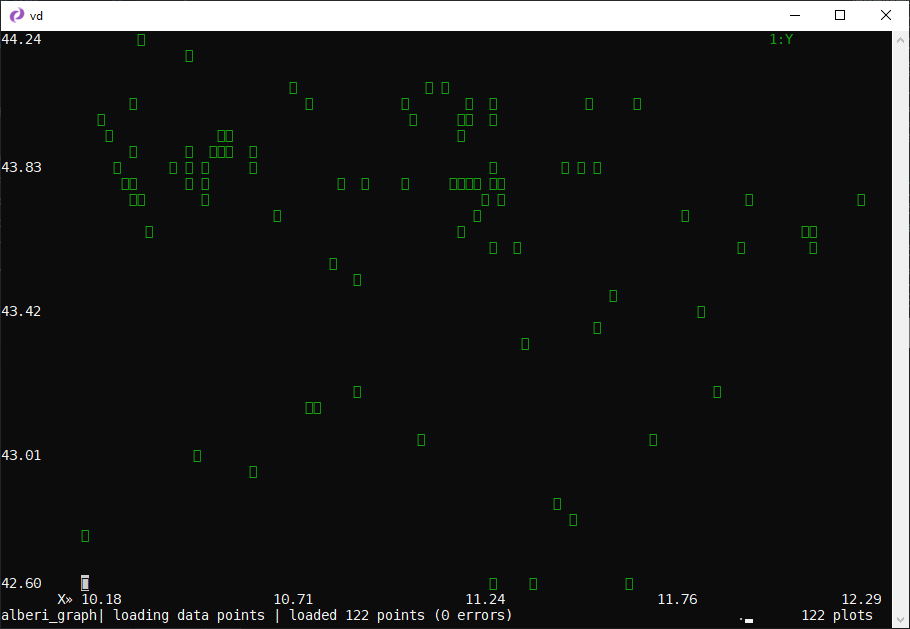
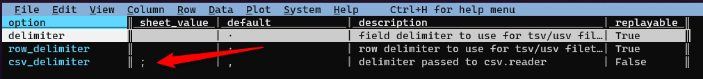

Ricette¶
Filtrare un campo con delle date¶
Si ha a disposizione un file come quello di sotto, da cui si vogliono estrarre soltanto le righe che contengono date comprese tra i giorni 8 agosto 2020 e 2 maggio 2023. Nota bene, il campo data di questo CSV ha una struttura YYYY-MM-DD, che consente di usare in modo "nativo" le funzioni Python sulle date.
id,data
1,2020-12-05
2,2020-07-08
3,2024-12-05
Questi i passi da eseguire:
- si va sulla colonna
data; - si imposta per questa il tipo di campo, indicando che è un campo che contiene date, facendo click su
@; - si fa click su
z|per applicare un'espressione Python (vedi sotto); - si scrive un'espressione coerente con gli obiettivi e si fa click su INVIO.
L'espressione per applicare il filtro descritto sopra è:
data > datetime.date(2020,8,8) and data < datetime.date(2023,5,2)
Sarà selezionata soltanto la riga 1,2020-12-05.
Salvare una tabella HTML in CSV, a partire da una pagina web¶
In questo esempio il presupposto è che si voglia trasformare in CSV una tabella HTML presente in una pagina web, in cui ci sono più tabelle. Il punto di partenza è quello di estrarre dalla pagina sorgente, una pagina HTML che contiene soltanto la tabella di interesse.
La pagina di esempio è:
https://web.archive.org/web/20190618071304/http://www.sias.regione.sicilia.it/NHEOWLH140_00_1.html
Questa è composta da diverse tabelle.

Quella di interesse è l'unica composta da più di 7 colonne, e la query XPATH per estrarla è //table[count(tr/td)>7].
La pagina di origine ha l'encoding in ISO-8859-1, ed è da convertire in UTF-8.
Per scaricare la pagina, cambiarne l'encoding ed estrarre la tabella di interesse il comando può essere
curl "http://www.sias.regione.sicilia.it/NHEOWLH140_00_1.html" | \
iconv -f ISO-8859-1 -t utf-8 | \
scrape -be '//table[count(tr/td)>7]'
L'utility usata sopra per fare la query XPATH è scrape-cli.
In output si ha una pagina web che contiene soltanto la tabella di interesse.
Per passarla a VisiData bisognerà modificare così lo script:
curl "http://www.sias.regione.sicilia.it/NHEOWLH140_00_1.html" | \
iconv -f ISO-8859-1 -t utf-8 | \
scrape -be '//table[count(tr/td)>7]' | \
vd -f html
Come risultato si aprirà la finestra di sotto. Per aprire la tabella sarà necessario premere INVIO e poi si potrà salvare la tabella in CSV (o altri formati) digitando CTRL+ s.

Se si vuole inserire nello script anche la procedura di salvataggio, bisogna modificare lo script in questo modo:
curl "http://www.sias.regione.sicilia.it/NHEOWLH140_00_1.html" | \
iconv -f ISO-8859-1 -t utf-8 | \
scrape -be '//table[count(tr/td)>7]' | \
vd -b -f html -o out.csv -p dive.vd
Note:
-bè per eseguire VisiData senza interfaccia;-p dive.vdper eseguire dei comandi (qui semplicemente l'apertura della tabella a partire dalla finestra iniziale di sopra).
Nel file dive.vd c'è il seguente contenuto.
sheet col row longname input keystrokes comment
open-file - o
- 0 dive-row ^J
Il file di sopra è un file di log di VisiData (vedi sezione dedicata). Tutte le operazioni fatte in VisiData finiscono in un log che può essere visualizzato e salvato. Quindi è possibile salvare la visualizzazione dell'elenco delle tabelle e poi l'apertura di quella di interesse.
Per creare questo di sopra:
- arrivare a visualizzare la tabella su VisiData;
- digitare
INVIO; - digitate
SHIFT + dper visualizzare il log dei comandi; - e infine
CTRL + sper salvare il filedive.vd.
Salvare in blocco tutte le tabelle di una pagina web¶
Alle volte in una pagina HTML ci sono più tabelle. Ad esempio quelle della pagina sul rapporto "Ecosistema urbano di Legambiente e Ambiente Italia".
Per scaricarle e salvarle tutte, questi i passi da seguire:
- aprire la pagina, specificando con
--save-filetype=csvquale sarà il formato in cui si vorranno salvare le tabelle;
vd https://lab24.ilsole24ore.com/ecosistema-urbano/indexT.php --save-filetype=csv
- una volta aperto VisiData, rimanere nelle prima colonna e selezionare tutto con
gs; - la prima colonna contiene il nome delle tabelle. In questo caso sono una ventina e hanno tutte lo stesso nome. Per poterle salvare, senza sovrascriversi a vicenda (hanno tutte lo stesso nome), rinominarle con
giche creerà in quella colonna - per ogni cella - un progressivo numerico a partire da1;

- lanciare il comando per salvare tutte le tabelle (che sono già selezionate), ovvero
g+CTRL+s; - indicare come output la cartella corrente
./(occhio quindi, verificare che non ci sia nulla di importante dentro) e dare INVIO; - verrà chiesto il permesso di sovrascrivere; rispondere con
yes.
Nella cartella di lavoro saranno disponibili tutte le tabelle, in formato CSV.
Nota bene: la ricetta è stata stimolata da questa domanda.
Aprire una determinata tabella di una pagina web¶
Quando si apre una pagina web con VisiData, ci viene restituito un elenco delle tabelle presenti nella pagina.
Se si lancia ad esempio vd "https://SitoEsempio.it/pagina", si avrà un output come quello di sotto, in cui nella prima colonna ci sono le tabelle denominate table_0 e links. L'utente potrà selezionare la prima riga e premere INVIO per aprire la tabella table_0.

Se si vuole aprire direttamente la tabella table_0, senza passare da questo elenco, si può fare aggiungendo +:nome_tabella:: al comando. In questo esempio quindi sarà:
vd "https://SitoEsempio.it/pagina" +:table_0::
Salvare un flusso di lavoro¶
Introduzione¶
In VisiData è possibile salvare il log delle operazione fatte e riutilizzarlo per applicarle nuovamente al file di input.
Se ad esempio a partire da questo file CSV (sotto l'anteprima) si volessero cancellare tutte le righe che contengono il solo carattere a nella prima colonna e infine salvare l'output, la procedura è:
vd input.csv;- posizionarsi nella prima colonna e pigiare | per attivare la selezione tramite espressione regolare, scrivere
^a$e premere INVIO. Verrà fatta la selezione descritta; - pigiare in sequenza g e d per cancellare le righe selezionate;
- poi CTRL+s;
- e infine scegliere un nome di output (ad esempio
output.csv) e pigiare INVIO per salvare il file.
| field1 | field2 |
|---|---|
| a | 0 |
| b | 3 |
| a | 4 |
| c | 5 |
Per salvare la procedura di sopra in un file di log, bisognerà premere CTRL+d, scegliere un nome per salvare il file (ad esempio cancella_le_a.vd) e pigiare INVIO.
Il file di log salvato avrà un contenuto come quello sottostante (è un file TSV), in cui sono "mappate" tutte le operazioni fatte:
| sheet | col | row | longname | input | keystrokes | comment |
|---|---|---|---|---|---|---|
| global | null_value | set-option | ||||
| open-file | input.csv | o | ||||
| input | field1 | select-col-regex | ^a$ | |||
| input | delete-selected | gd | delete (cut) selected rows and move them to clipboard | |||
| input | save-sheet | output.csv | ^S | save current sheet to filename in format determined by extension (default .tsv) |
Per riapplicare la stessa procedura al file, senza interagire con lo schermo, il comando da lanciare è:
vd -b -p cancella_le_a.vd
-bper eseguire VisiData senza attivarne l'interfaccia;-pper replicare un file di log.
Se questo comando si lancia dopo avere già creato il file di output, si avrà un messaggio di errore, che avvisa che il file esiste già e non può essere sovrascritto.
Per fare in modo che venga sovrascritto bisognerà aggiungere l'opzione -y:
vd -y -b -p cancella_le_a.vd
A schermo verrà restituito l'elenco delle operazione svolte:
opening cancella_le_a.vd as vd
"input.csv"
opening input.csv as csv
select rows matching regex in current column
"^a$"
search wrapped
2 matches for /^a$/
selected 2 rows
delete (cut) selected rows and move them to clipboard
copied 2 rows to clipboard
deleted 2 rows
save current sheet to filename in format determined by extension (default .tsv)
"output.csv"
saving 1 sheets to output.csv as csv
replay complete
Applicare lo stesso flusso a un file diverso, ma omologo¶
Spesso si ha la necessità di applicare una stessa procedura ad altri file, con la stessa struttura, ma con contenuti differenti.
Per utilizzare il file di log creato con un file diverso da input.csv, bisognerà modificare il file di log (si modifica con qualsiasi editor di testo):
- rimuovere la riga con il riferimento a
input.csv - rimuovere il riferimento al nome del foglio (qui è
input, come il nome del file).
Diventerà quindi:
| sheet | col | row | longname | input | keystrokes | comment |
|---|---|---|---|---|---|---|
| global | null_value | set-option | ||||
| field1 | select-col-regex | ^a$ | ||||
| delete-selected | gd | delete (cut) selected rows and move them to clipboard | ||||
| save-sheet | output.csv | ^S | save current sheet to filename in format determined by extension (default .tsv) |
Fatto questo, il comando da usare con un nuovo file denominato ad esempio input_nuovo.csv sarà:
vd -y -b -p cancella_le_a.vd input_nuovo.csv
In output verrà creato il file output.csv.
Se si vuole creare un file di output con nome diverso, si deve cancellare dal file di log la riga in cui si fa riferimento a output.csv e lanciare il comando:
vd -y -b -p cancella_le_a.vd input_nuovo.csv -o output_nuovo.csv
Nota sul file di log¶
Si tratta di un TSV, quindi è possibile leggerlo e modificarlo proprio con VisiData:

Fare il redirect dell'output verso lo stdout¶
Il comando
vd input.csv -b --save-filetype json -o - | jq .
invierà ad esempio a jq un output JSON a partire dal CSV di input:
-bper eseguire VisiData senza attivarne l'interfaccia;--save-filetype jsonper fissare il formato di output inJSON;-o -per fare il redirect dell'output verso lostdout(rappresentato da-).
Se ad esempio si vuole passare l'output a grep:
vd input.csv -b --save-filetype tsv -o - 2> /dev/null | grep 'a'
2> /dev/null per non avere stderr a schermo.
Creare un grafico di dispersione (scatter plot)¶
VisiData può stampare a schermo anche dei grafici XY. Non è un suo punto di forza, ma può essere utile per avere una prima e grezza visualizzazione spaziale dell'insieme dei dati.
Il requisito per crearne uno, è avere due colonne numeriche, da usare come coppia di coordinate. Qualcosa come quella di sotto.
| fid | X | Y |
|---|---|---|
| 1 | 12.29 | 43.76 |
| 2 | 12.16 | 43.64 |
| 3 | 12.15 | 43.65 |
| 4 | 12.16 | 43.63 |
| ... | ... | ... |
Per generare il grafico basterà seguire i seguenti passi:
- impostare come numeriche (numeri decimali digitando
%sulla colonna, o#per numeri interi) le due colonne con le coordinate; - impostare come colonna chiave la colonna con le ascisse, selezionandola e digitando
!; - selezionare la colonna con le ordinate e digitare
..
In output si avrà qualcosa come quella di sotto

Applicare il natural sorting ai contenuti di una cella¶
Il natural sorting è un ordinamento di stringhe più "umano".
Se una cella contiene ad esempio i valori 3,1,10,1/A,100,SNC, l'ordinamento naturale potrebbe essere 1,1/A,3,10,100,SNC. Di contro un'applicazione - con una lista fatta sia di stringhe che di numeri - produce di solito questo ordinamento 1,1/A,10,100,3,SNC.
Il natural sorting è un concetto noto da tempo in letteratura (un esempio per tutti), ma spesso non è disponibile nativamente e bisogna implementarlo importando librerie o sfruttando funzioni dedicate.
In VisiData è applicabile ad esempio aggiungendo per prima cosa una funzione personalizzata al file di configurazione:
import re
_nsre = re.compile('([0-9]+)')
def natural_sort_key(s):
return [int(text) if text.isdigit() else text.lower()
for text in re.split(_nsre, s)]
def natsort(value, delimiter=','):
list1 = value.split(delimiter)
list1.sort(key=natural_sort_key)
joined_string = delimiter.join(list1)
return joined_string
Immaginiamo di volere applicare il natural sorting a un file come questo (un CSV):
nomeCampo
"3,1,10,1/A,100,SNC"
Questi saranno i passi da fare:
- aprire il file
vd input.csv; - fare click su =, per creare una nuova colonna basata su un'espressione Python;
- scrivere
natsort(nomeCampo)e dare INVIO, per applicare la funzione soprastante, al camponomeCampo.
In output si avrà:
nomeCampo,natsort(nomeCampo)
"3,1,10,1/A,100,SNC","1,1/A,3,10,100,SNC"
Nel file di configurazione di esempio inserito in questa guida, è stata aggiunta la funzione natsort.
Se nella cella il separatore non è la ,, si può personalizzare la funzione in questo modo: natsort(nomeCampo, delimiter='/') (in questo caso si è impostato come delimitatore il carattere /).
Grazie a Salvatore Fiandaca, per averci stimolato ad approfondire la cosa, con questa domanda su StackExchange.
Cambiare il separatore di campo di un CSV¶
Se si vuole cambiare il separatore di campo di un CSV, questi i passi da seguire:
- aprire il file;
- fare click su
barra spaziatrice; - digitare
options-sheete premereINVIO, per visualizzare le opzioni del foglio; - cercare l'opzione
csv_delimitere impostare comesheet_valueil separatore desiderato (la cella si modifica con il tastoe); - chiudere l'
options-sheetcon il tastoq; - premere
CTRL+se salvare il file in formatoCSV.

Nota
Ricetta creata grazie a questa richiesta di Salvatore Fiandaca.
Selezionare righe tramite una python expression¶
Si può selezionare un sottoinsieme di righe, in base a una condizione, utilizzando una python expression.
Ad esempio voglio selezionare tutte le righe in cui il campo basename rispetta un'espressione regolare basata su un altro campo, il campo var.
L'espressione prevede di cercare _V seguito da un numero, seguito da _ e dal valore del campo var, e infine da un punto e da qualsiasi cosa.
Ecco coma farlo:
- sposarsi sulla colonna
basename; - premere
z|per attivare la selezione tramite python expression; - scrivere l'espressione
re.search(rf"_V\d+_{var}\..+", basename)e premere INVIO.
Con rf si indica che si sta usando una raw string e che ad esempio il carattere \ non deve essere interpretato come un carattere di escape, ma come parte della stringa.
Qui, viene usato il modulo re per le espressioni regolari: per usarlo bisogna importarlo nel file di configurazione, ad esempio con la riga import re.
Nota
Anche nell'esempio di filtro per data, si applica una python expression.